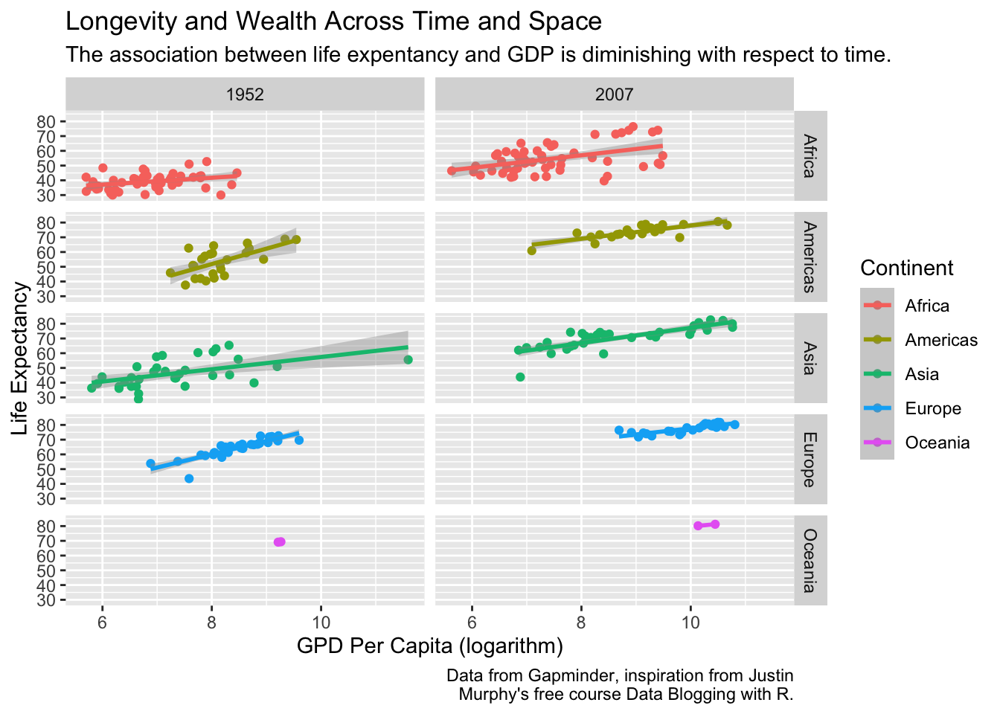

require(tidyverse)
require(gapminder)
filter(gapminder, year%in%c(1952, 2007)) %>% # Include only observations from 1952 and 2007
ggplot(aes(log(gdpPercap), lifeExp, col = continent)) + # Wealth & longevity, colored by continent
geom_point() + # Use points or dots to illustrate the data
geom_smooth(method='lm') + # Add a line of best fit
facet_grid(continent~year) + # Make separate panels or facets for each continent year
labs(colour = "Continent", # Clean things up for publication quality
x="GPD Per Capita (logarithm)",
y="Life Expectancy",
title="Longevity and Wealth Across Time and Space",
subtitle="Summarize your key insight here",
caption="Data from Gapminder, inspiration from Justin
Murphy's free course Data Blogging with R.")